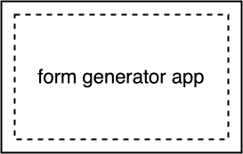
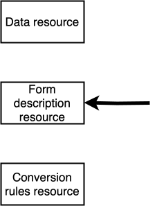
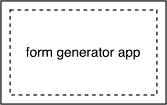
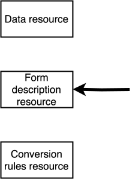

Forms are used for medical data entry
Health Data Space

Kiosk

Doctor's computer

Patient's smartphone
SDS 2024, 26 May 2024
Kiosk
Doctor's computer
Patient's smartphone
With big buttons
Optimized for quick data entry
Extensive description of each field


 





Using HTML in the browser

Text-based via the command-line